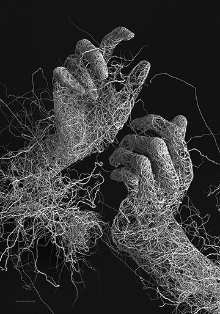

摄影理念
Photography concept
后期制作快速兴起
照相进行完成后，介质所存留的影像信息必须通过转换而再度为人眼所读取。具体方法依赖于感光手段和介质特性。对于胶片照相机，会有定影，显影，放大等化学过程。对于数码照相机，则需要通过计算机对图片进行处理，再通过其他电子设备输出。
在目标明确的基础上，完成网站的构思创意即总体设计方案对网站的整体风格和特色作出定位，规划网站的组织结构。

便于使用
网站伴随着网络的快速发展而快速兴起，作为上网的主要依托，由于人们使用网络的频繁而变得非常的重要。由于企业需要通过网站呈现产品、服务、理念、文化，或向大众提供某种功能服务。因此网页设计必须首先明确设计站点的目的和用户的需求，从而做出切实可行的设计方案。

网络资源的优势之一是多媒体功能。要吸引浏览者注意力，网页的内容可以用三维动画、FLASH等来表现。但要由于网络宽带的限制，在使用多媒体的形式表现网页的内容时不得不考虑客户端的传输速度。

如果人们看不懂或很难看懂您的网站，那么，他如何了解你的企业信息和服务项目呢？使用一些醒目的标题或文字来突出您的产品与服务。并且即使您拥有最棒的产品，如果客户从您的网站上看不清楚您在介绍什么或不清楚如何受益的话他们是不会喜欢您的网站的...
很多的浏览者不会进入需要等待5分钟下载时间才能进入的网站，在互联网上30秒的等待时间与我们平常10分钟等待时间的感觉相同。因此，建议在网页设计中尽量避免使用过多的图片及体积过大的图片。主要页面的容量应确保普通浏览者页面等待时间不超过10秒。
多页面站点页面的编排设计要求把页面之间的有机联系反映出来，特别要求处理好页面之间和页面内的秩序与内容的关系。为了达到最佳的视觉表现效果，反复推敲整体布局的合理性，使浏览者有一个流畅的视觉体验。